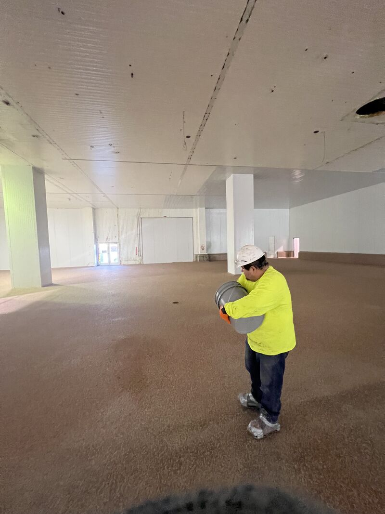
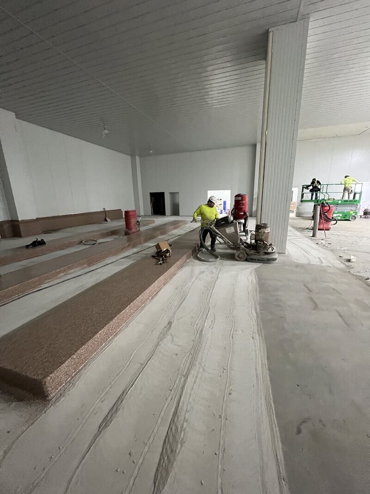
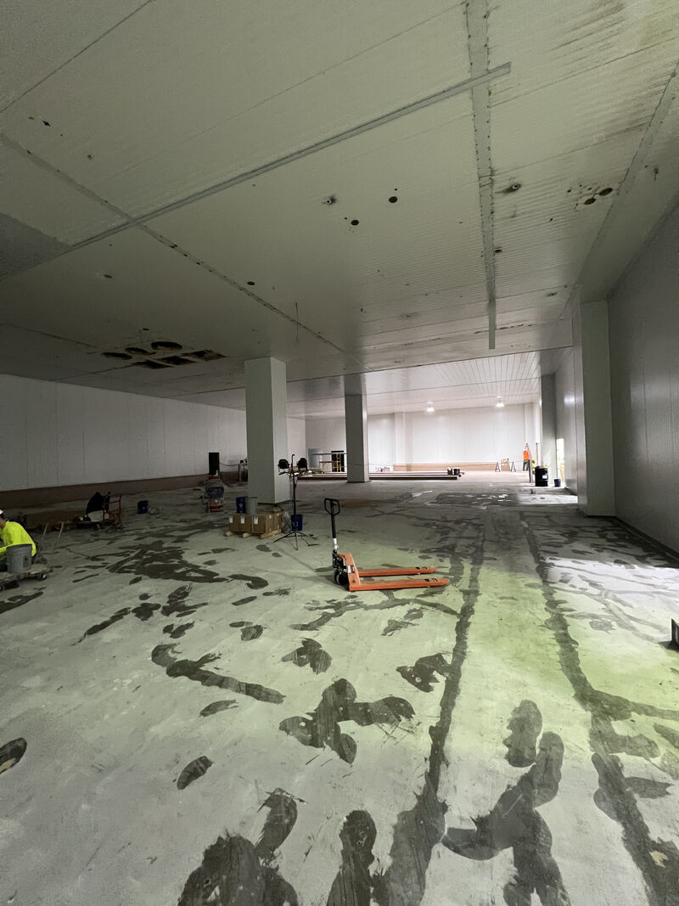
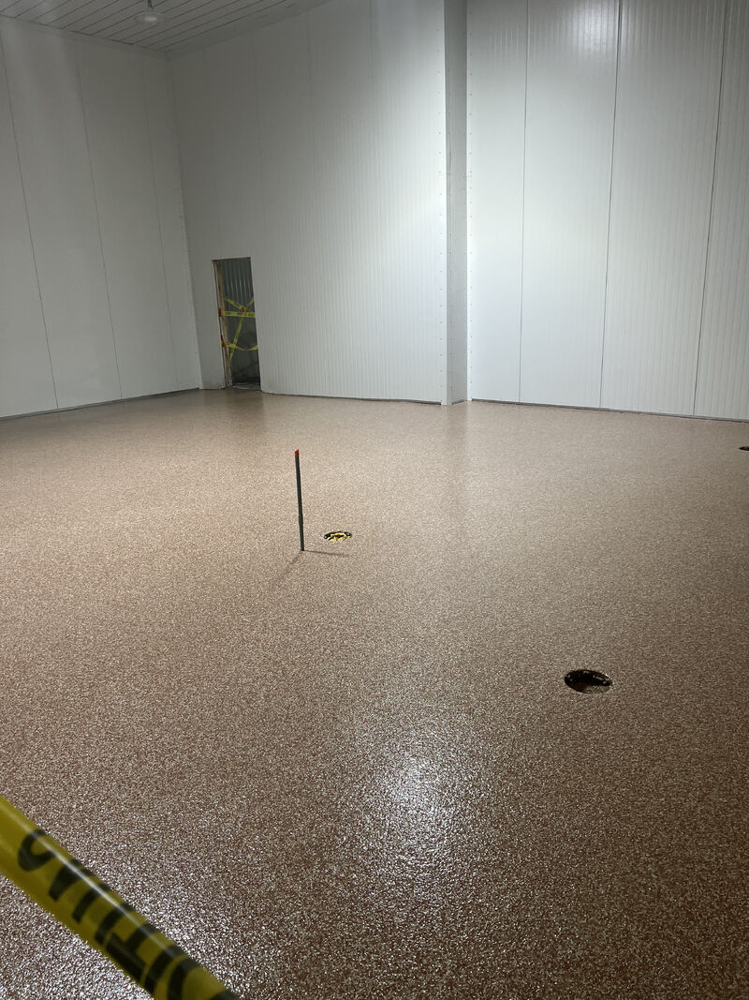

Processing floors usually get the attention in a food plant. That makes sense. They see the washdowns, the production traffic, the drains, the ingredients, and the mess that comes with making food at scale.
But they are not the only floors in the building that matter. This project was all locker rooms, breakrooms, and cafeteria areas. Those spaces may not look like the production room, but auditors still walk them. Employees use them every day. They still need to be clean, sanitary, slip resistant, and easy to keep that way.

Different Areas Ask Different Questions
Every area of a plant asks something different of its floor. The first question is not always which product looks best. It is what the floor has to do after it is installed.
Will the area see washdowns or mostly foot traffic? Is the traffic coming from forklifts or lunch tables? Does the space need a heavy-duty cementitious urethane system, or does it need a seamless epoxy flake floor that is better suited to daily employee use?
In these locker room, breakroom, and cafeteria areas, the right answer was SaniFlake. It is a seamless, slip resistant epoxy flake system built for spaces that still need a sanitary resinous floor without pretending they are the main processing room.



The Spec Should Follow the Space
A food plant floor package can include more than one system. That is normal. The goal is not to force one product into every room. The goal is to put the right system in the right area so the whole facility is easier to run and easier to keep clean.
That matters on new builds and expansions because these decisions are easier before the space is full of equipment, lockers, tables, and schedules. It also matters on renovation work because a support space that is hard to clean can still create headaches for the plant.
SaniFlake was the practical choice here because the job was focused on employee support areas and daily foot traffic. It gave the plant a sanitary resinous floor with a finish that fits the work those rooms actually do.
It also kept the support areas aligned with the standard expected in the rest of the facility, without overspecifying a production floor system.
Building or Expanding a Facility?
We can help decide what belongs in each area of the plant, from wet processing floors to locker rooms, breakrooms, and cafeteria spaces.